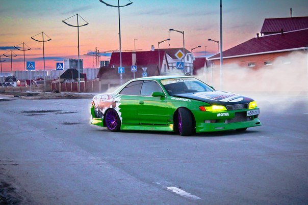

Чтобы удачно выйти из заноса, руки должны находиться в положении «10-14» (представьте себе циферблат часов). Это наиболее удачный хват руля для резких движений с большой амплитудой в любую сторону. И в любом случае, надо отпустить педаль тормоза, хотя преодолеть рефлекс очень сложно. Автомобиль не может и поворачивать, и тормозить одновременно.
Наиболее простой вариант. Руль вывернуть в сторону заноса и нажимать газ. Как только автомобиль повернул за рулем, постепенно сбрасывать газ и стабилизировать авто на дороге, чтобы «не вилял» зад. Колеса всегда должны «смотреть» точно туда, куда идет занос, а педаль газа никогда не должна быть отпущена полностью.
Несколько более сложный вариант — работа преиму щественно за счет руля. Руль резко вывернуть в сторону заноса, педаль газа полностью отпустить. Автомобиль идет на движке. По рулю те же действия, что и на переднем приводе, только помощи от передних колес ждать не приходится.Самый сложный вариант. Руль выворачивается в сторону заноса. Это вся практическая рекомендация. Педаль газа нельзя ни отпускать полностью, как в случае с задним приводом, ни, тем более, давить сильно. Регулировка скорости должна идти на интуитивном уровне, это надо почувствовать.
Теория без практики мертва и бесплодна. В каждом крупном городе есть курсы экстремального или спортивного вождения. Необязательно проходить всю программу, но отработать за пару-тройку часов управляемый занос на своей машине можно. С инструктором и на специальном автодроме (часто это укатанное голое поле) это безопасно. Итак, во-первых, всегда нужно помнить, что проще предотвратить проблему, чем героически искать выход. А во-вторых, столкновения со встречным транспортом нужно избегать любой ценой. Лучше попутный автомобиль, сугроб, кювет или даже столб, но не «лобовое» столкновение.